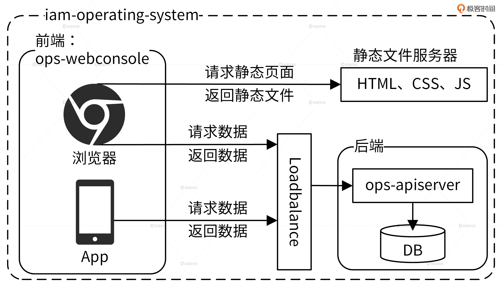
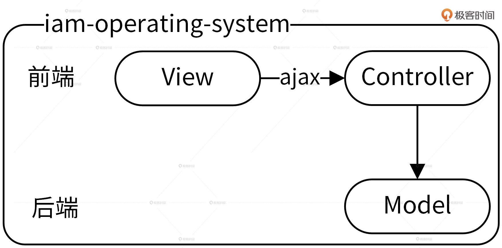

- 00 开篇词 从 0 开始搭建一个企业级 Go 应用.md.html
- 01 IAM系统概述：我们要实现什么样的 Go 项目？.md.html
- 02 环境准备：如何安装和配置一个基本的 Go 开发环境？.md.html
- 03 项目部署：如何快速部署 IAM 系统？.md.html
- 04 规范设计（上）：项目开发杂乱无章，如何规范？.md.html
- 05 规范设计（下）：commit 信息风格迥异、难以阅读，如何规范？.md.html
- 06 目录结构设计：如何组织一个可维护、可扩展的代码目录？.md.html
- 07 工作流设计：如何设计合理的多人开发模式？.md.html
- 08 研发流程设计（上）：如何设计 Go 项目的开发流程？.md.html
- 09 研发流程设计（下）：如何管理应用的生命周期？.md.html
- 10 设计方法：怎么写出优雅的 Go 项目？.md.html
- 11 设计模式：Go常用设计模式概述.md.html
- 12 API 风格（上）：如何设计RESTful API？.md.html
- 13 API 风格（下）：RPC API介绍.md.html
- 14 项目管理：如何编写高质量的Makefile？.md.html
- 15 研发流程实战：IAM项目是如何进行研发流程管理的？.md.html
- 16 代码检查：如何进行静态代码检查？.md.html
- 17 API 文档：如何生成 Swagger API 文档 ？.md.html
- 18 错误处理（上）：如何设计一套科学的错误码？.md.html
- 19 错误处理（下）：如何设计错误包？.md.html
- 20 日志处理（上）：如何设计日志包并记录日志？.md.html
- 21 日志处理（下）：手把手教你从 0 编写一个日志包.md.html
- 22 应用构建三剑客：Pflag、Viper、Cobra 核心功能介绍.md.html
- 23 应用构建实战：如何构建一个优秀的企业应用框架？.md.html
- 24 Web 服务：Web 服务核心功能有哪些，如何实现？.md.html
- 25 认证机制：应用程序如何进行访问认证？.md.html
- 26 IAM项目是如何设计和实现访问认证功能的？.md.html
- 27 权限模型：5大权限模型是如何进行资源授权的？.md.html
- 28 控制流（上）：通过iam-apiserver设计，看Web服务的构建.md.html
- 29 控制流（下）：iam-apiserver服务核心功能实现讲解.md.html
- 30 ORM：CURD 神器 GORM 包介绍及实战.md.html
- 31 数据流：通过iam-authz-server设计，看数据流服务的设计.md.html
- 32 数据处理：如何高效处理应用程序产生的数据？.md.html
- 33 SDK 设计（上）：如何设计出一个优秀的 Go SDK？.md.html
- 34 SDK 设计（下）：IAM项目Go SDK设计和实现.md.html
- 35 效率神器：如何设计和实现一个命令行客户端工具？.md.html
- 36 代码测试（上）：如何编写 Go 语言单元测试和性能测试用例？.md.html
- 37 代码测试（下）：Go 语言其他测试类型及 IAM 测试介绍.md.html
- 38 性能分析（上）：如何分析 Go 语言代码的性能？.md.html
- 39 性能分析（下）：API Server性能测试和调优实战.md.html
- 40 软件部署实战（上）：部署方案及负载均衡、高可用组件介绍.md.html
- 41 软件部署实战（中）：IAM 系统生产环境部署实战.md.html
- 42 软件部署实战（下）：IAM系统安全加固、水平扩缩容实战.md.html
- 43 技术演进（上）：虚拟化技术演进之路.md.html
- 44 技术演进（下）：软件架构和应用生命周期技术演进之路.md.html
- 45 基于Kubernetes的云原生架构设计.md.html
- 46 如何制作Docker镜像？.md.html
- 47 如何编写Kubernetes资源定义文件？.md.html
- 48 IAM 容器化部署实战.md.html
- 49 服务编排（上）：Helm服务编排基础知识.md.html
- 50 服务编排（下）：基于Helm的服务编排部署实战.md.html
- 51 基于 GitHub Actions 的 CI 实战.md.html
- 特别放送 Go Modules依赖包管理全讲.md.html
- 特别放送 Go Modules实战.md.html
- 特别放送 IAM排障指南.md.html
- 特别放送 分布式作业系统设计和实现.md.html
- 特别放送 给你一份Go项目中最常用的Makefile核心语法.md.html
- 特别放送 给你一份清晰、可直接套用的Go编码规范.md.html
- 直播加餐 如何从小白进阶成 Go 语言专家？.md.html
- 结束语 如何让自己的 Go 研发之路走得更远？.md.html
- 捐赠
01 IAM系统概述：我们要实现什么样的 Go 项目？
你好，我是孔令飞。从今天开始我们进入课前准备阶段，我会用3讲的时间给你讲清楚，我们要实现的实战项目 IAM 应用长啥样、它能干什么，以及怎么把它部署到 Linux 服务器上。先和我一起扫除基础的障碍，你就能够更轻松地学习后面的课程了。
今天这一讲，我先来说说为什么选择 IAM 应用，它能实现什么功能，以及它的架构和使用流程。
项目背景：为什么选择 IAM 系统作为实战项目？
我们在做 Go 项目开发时，绕不开的一个话题是安全，如何保证 Go 应用的安全，是每个开发者都要解决的问题。虽然 Go 应用的安全包含很多方面，但大体可分为如下 2 类：
- 服务自身的安全：为了保证服务的安全，需要禁止非法用户访问服务。这可以通过服务器层面和软件层面来解决。服务器层面可以通过物理隔离、网络隔离、防火墙等技术从底层保证服务的安全性，软件层面可以通过 HTTPS、用户认证等手段来加强服务的安全性。服务器层面一般由运维团队来保障，软件层面则需要开发者来保障。
- 服务资源的安全：服务内有很多资源，为了避免非法访问，开发者要避免 UserA 访问到 UserB 的资源，也即需要对资源进行授权。通常，我们可以通过资源授权系统来对资源进行授权。
总的来说，为了保障Go应用的安全，我们需要对访问进行认证，对资源进行授权。那么，我们要如何实现访问认证和资源授权呢？
认证功能不复杂，我们可以通过 JWT （JSON Web Token）认证来实现。授权功能比较复杂，授权功能的复杂性使得它可以囊括很多 Go 开发技能点。因此，在这个专栏中，我将认证和授权的功能实现升级为 IAM 系统，通过讲解它的构建过程，给你讲清楚 Go 项目开发的全部流程。
IAM 系统是什么？
IAM（Identity and Access Management，身份识别与访问管理）系统是用 Go 语言编写的一个 Web 服务，用于给第三方用户提供访问控制服务。
IAM 系统可以帮用户解决的问题是：在特定的条件下，谁能够/不能够对哪些资源做哪些操作（Who is able to do what on something given some context），也即完成资源授权功能。
提示：以后我们在提到 IAM 系统或者 IAM 时都是指代 IAM 应用。
那么，IAM 系统是如何进行资源授权的呢？下面，我们通过 IAM 系统的资源授权的流程，来看下它是如何工作的，整个过程可以分为 4 步。
- 用户需要提供昵称、密码、邮箱、电话等信息注册并登录到 IAM 系统，这里是以用户名和密码作为唯一的身份标识来访问 IAM 系统，并且完成认证。
- 因为访问 IAM 的资源授权接口是通过密钥（secretID/secretKey）的方式进行认证的，所以用户需要在 IAM 中创建属于自己的密钥资源。
- 因为 IAM 通过授权策略完成授权，所以用户需要在 IAM 中创建授权策略。
- 请求 IAM 提供的授权接口，IAM 会根据用户的请求内容和授权策略来决定一个授权请求是否被允许。
我们可以看到，在上面的流程中，IAM 使用到了 3 种系统资源：用户（User）、密钥（Secret）和策略（Policy），它们映射到程序设计中就是 3 种 RESTful 资源：
- 用户（User）：实现对用户的增、删、改、查、修改密码、批量修改等操作。
- 密钥（Secret）：实现对密钥的增、删、改、查操作。
- 策略（Policy）：实现对策略的增、删、改、查、批量删除操作。
IAM 系统的架构长啥样？
知道了 IAM 的功能之后，我们再来详细说说 IAM 系统的架构，架构图如下：
总的来说，IAM 架构中包括 9 大组件和 3 大数据库。我将这些组件和功能都总结在下面的表格中。这里面，我们主要记住5个核心组件，包括iam-apiserver、iam-authz-server、iam-pump、marmotedu-sdk-go和iamctl的功能，还有3个数据库Redis、MySQL和MongoDB的功能。

此外，IAM 系统为存储数据使用到的 3 种数据库的说明如下所示。-

通过使用流程理解架构
只看到这样的系统架构图和核心功能讲解，你可能还不清楚整个系统是如何协作，来最终完成资源授权的。所以接下来，我们通过详细讲解 IAM 系统的使用流程及其实现细节，来进一步加深你对 IAM 架构的理解。总的来说，我们可以通过 4 步去使用 IAM 系统的核心功能。
第1步，创建平台资源。
用户通过 iam-webconsole（RESTful API）或 iamctl（sdk marmotedu-sdk-go）客户端请求 iam-apiserver 提供的 RESTful API 接口完成用户、密钥、授权策略的增删改查，iam-apiserver 会将这些资源数据持久化存储在 MySQL 数据库中。而且，为了确保通信安全，客户端访问服务端都是通过 HTTPS 协议来访问的。
第2步，请求 API 完成资源授权。
用户可以通过请求 iam-authz-server 提供的 /v1/authz 接口进行资源授权，请求 /v1/authz 接口需要通过密钥认证，认证通过后 /v1/authz 接口会查询授权策略，从而决定资源请求是否被允许。
为了提高 /v1/authz 接口的性能，iam-authz-server 将密钥和策略信息缓存在内存中，以便实现快速查询。那密钥和策略信息是如何实现缓存的呢？
首先，iam-authz-server 通过调用 iam-apiserver 提供的 gRPC 接口，将密钥和授权策略信息缓存到内存中。同时，为了使内存中的缓存信息和 iam-apiserver 中的信息保持一致，当 iam-apiserver 中有密钥或策略被更新时，iam-apiserver 会往特定的 Redis Channel（iam-authz-server 也会订阅该 Channel）中发送 PolicyChanged 和 SecretChanged 消息。这样一来，当 iam-authz-server 监听到有新消息时就会获取并解析消息，根据消息内容判断是否需要重新调用 gRPC 接来获取密钥和授权策略信息，再更新到内存中。
第3步，授权日志数据分析。
iam-authz-server 会将授权日志上报到 Redis 高速缓存中，然后 iam-pump 组件会异步消费这些授权日志，再把清理后的数据保存在 MongoDB 中，供运营系统 iam-operating-system 查询。
这里还有一点你要注意：iam-authz-server 将授权日志保存在 Redis 高性能 key-value 数据库中，可以最大化减少写入延时。不保存在内存中是因为授权日志量我们没法预测，当授权日志量很大时，很可能会将内存耗尽，造成服务中断。
第4步，运营平台授权数据展示。
iam-operating-system 是 IAM 的运营系统，它可以通过查询 MongoDB 获取并展示运营数据，比如某个用户的授权/失败次数、授权失败时的授权信息等。此外，我们也可以通过 iam-operating-system 调用 iam-apiserver 服务来做些运营管理工作。比如，以上帝视角查看某个用户的授权策略供排障使用，或者调整用户可创建密钥的最大个数，再或者通过白名单的方式，让某个用户不受密钥个数限制的影响等等。
IAM 软件架构模式
在设计软件时，我们首先要做的就是选择一种软件架构模式，它对软件后续的开发方式、软件维护成本都有比较大的影响。因此，这里我也会和你简单聊聊 2 种最常用的软件架构模式，分别是前后端分离架构和 MVC 架构。
前后端分离架构
因为IAM 系统采用的就是前后端分离的架构，所以我们就以 IAM 的运营系统 iam-operating-system 为例来详细说说这个架构。一般来说，运营系统的功能可多可少，对于一些具有复杂功能的运营系统，我们可以采用前后端分离的架构。其中，前端负责页面的展示以及数据的加载和渲染，后端只负责返回前端需要的数据。
iam-operating-system 前后端分离架构如下图所示。

采用了前后端分离架构之后，当你通过浏览器请求前端 ops-webconsole 时，ops-webconsole 会先请求静态文件服务器加载静态文件，比如 HTML、CSS 和 JavaScript，然后它会执行 JavaScript，通过负载均衡请求后端数据，最后把后端返回的数据渲染到前端页面中。
采用前后端分离的架构，让前后端通过 RESTful API 通信，会带来以下5点好处：
- 可以让前、后端人员各自专注在自己业务的功能开发上，让专业的人做专业的事，来提高代码质量和开发效率
- 前后端可并行开发和发布，这也能提高开发和发布效率，加快产品迭代速度
- 前后端组件、代码分开，职责分明，可以增加代码的维护性和可读性，减少代码改动引起的 Bug 概率，同时也能快速定位 Bug
- 前端 JavaScript 可以处理后台的数据，减少对后台服务器的压力
- 可根据需要选择性水平扩容前端或者后端来节约成本
MVC 架构
但是，如果运营系统功能比较少，采用前后端分离框架的弊反而大于利，比如前后端分离要同时维护 2 个组件会导致部署更复杂，并且前后端分离将人员也分开了，这会增加一定程度的沟通成本。同时，因为代码中也需要实现前后端交互的逻辑，所以会引入一定的开发量。
这个时候，我们可以尝试直接采用 MVC 软件架构，MVC 架构如下图所示。

MVC 的全名是 Model View Controller，它是一种架构模式，分为 Model、View、Controller 三层，每一层的功能如下：
- View（视图）：提供给用户的操作界面，用来处理数据的显示。
- Controller（控制器）：根据用户从 View 层输入的指令，选取 Model 层中的数据，然后对其进行相应的操作，产生最终结果。
- Model（模型）：应用程序中用于处理数据逻辑的部分。
MVC 架构的好处是通过控制器层将视图层和模型层分离之后，当更改视图层代码后时，我们就不需要重新编译控制器层和模型层的代码了。同样，如果业务流程发生改变也只需要变更模型层的代码就可以。在实际开发中为了更好的 UI 效果，视图层需要经常变更，但是通过 MVC 架构，在变更视图层时，我们根本不需要对业务逻辑层的代码做任何变化，这不仅减少了风险还能提高代码变更和发布的效率。
除此之外，还有一种跟 MVC 比较相似的软件开发架构叫三层架构，它包括UI 层、BLL 层和DAL 层。其中，UI 层表示用户界面，BLL 层表示业务逻辑，DAL 层表示数据访问。在实际开发中很多人将 MVC 当成三层架构在用，比如说，很多人喜欢把软件的业务逻辑放在 Controller 层里，将数据库访问操作的代码放在 Model 层里，软件最终的代码放在 View 层里，就这样硬生生将 MVC 架构变成了伪三层架构。
这种代码不仅不伦不类，同时也失去了三层架构和 MVC 架构的核心优势，也就是：通过 Controller层将 Model层和 View层解耦，从而使代码更容易维护和扩展。因此在实际开发中，我们也要注意遵循 MVC 架构的开发规范，发挥 MVC 的核心价值。
总结
一个好的 Go 应用必须要保证应用的安全性，这可以通过认证和授权来保障。也因此认证和授权是开发一个 Go 项目必须要实现的功能。为了帮助你实现这 2 个功能，并借此机会学习 Go 项目开发，我将这 2 个功能升级为一个 IAM系统。通过讲解如何开发 IAM 系统，来教你如何开发 Go 项目。
因为后面的学习都是围绕 IAM 系统展开的，所以这一讲我们要重点掌握 IAM 的功能、架构和使用流程，我们可以通过 4 步使用流程来了解。
首先，用户通过调用 iam-apiserver 提供的 RESTful API 接口完成注册和登录系统，再调用接口创建密钥和授权策略。
创建完密钥对和授权策略之后，IAM 可以通过调用 iam-authz-server 的授权接口完成资源的授权。具体来说，iam-authz-server 通过 gRPC 接口获取 iam-apiserver 中存储的密钥和授权策略信息，通过 JWT 完成认证之后，再通过 ory/ladon 包完成资源的授权。
接着，iam-pump 组件异步消费 Redis 中的数据，并持久化存储在 MongoDB 中，供 iam-operating-system 运营平台展示。
最后，IAM 相关的产品、研发人员可以通过 IAM 的运营系统 iam-operating-system 来查看 IAM 系统的使用情况，进行运营分析。例如某个用户的授权/失败次数、授权失败时的授权信息等。
另外，为了提高开发和访问效率，IAM 分别提供了 marmotedu-sdk-go SDK 和 iamctl 命令行工具，二者通过 HTTPS 协议访问 IAM 提供的 RESTful 接口。
课后练习
- 你在做 Go 项目开发时经常用到哪些技能点？有些技能点是 IAM 没有包含的？
- 在你所接触的项目中，哪些是前后端分离架构，哪些是 MVC 架构呢？你觉得项目采用的架构是否合理呢？
期待在留言区看到你的思考和分享，我们下一讲见！
© 2019 - 2023 Liangliang Lee. Powered by gin and hexo-theme-book.